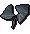

")
Der Trawler
Nur RuneScape-Mitglieder haben Zugang zu diesem Minispiel. Wenn ihr euch anmeldet, könnt auch ihr dieses Feature nutzen.
Bitte beachtet, dass dies ein 'sicheres' Minispiel ist. Ihr könnt dabei nicht sterben, außer ihr wurdet vergiftet.
Einführung

Falls ihr das Boot sicher und in einem Stück wieder in den Hafen bringt, teilt Murphy seinen Fang mit euch.
Lage


Voraussetzungen
Ihr benötigt Fischen mindestens auf Stufe 15, damit ihr beim Fischfang mithelfen könnt, und könnt nur Fische fangen, die eurer Stufe entsprechen. Der Trawler ist der einzige Ort, von dem aus hochstufige Fischer Schildkröten und Teufelsrochen angeln können.
Empfohlene Ausrüstung
Bevor ihr an Bord des Trawlers geht, müsst ihr euch Vorräte zulegen. Alle notwendigen Gegenstände werden im Gemischtwarenladen in Port Khazard verkauft. Die Preise dort sind allerdings schierer Wucher!
Folgende Dinge solltet ihr dabei haben:
Gegenstand |
Verwendung |
![[Bild]](../../img/main/kbase/items/misc/coins.gif) Goldmünzen Goldmünzen |
Ihr braucht Goldstücke, um Vorräte zu kaufen. |
![[Bild]](../../img/main/kbase/minigames/trawler/swamp_paste.gif) Sumpfpaste Sumpfpaste |
Wenn ihr die Paste lieber selbst herstellen wollt, als sie zu kaufen, vermischt etwas Sumpfteer mit Mehl und kocht die entstandene Mischung. Sumpfteer findet man im Sumpf südlich von Lumbridge. |
![[Bild]](../../img/main/kbase/items/misc/emptybucket.gif) Schöpfeimer Schöpfeimer |
Damit schöpft ihr Wasser aus dem Boot. Wenn das Boot anfängt zu lecken, werdet ihr dieses Hilfsmittel zu schätzen wissen. |
![[Bild]](../../img/main/kbase/items/misc/climbing_rope.gif) Seil Seil |
Das Netz reißt öfter mal, also braucht ihr ein Seil, um es wieder zu flicken. Erfahrung in Handwerk wäre hier von Vorteil, ist aber keine Voraussetzung. |
Bringt ein paar Freunde mit! Alleine ist die Aufgabe fast nicht zu schaffen. |
Der Trawler
Um mit dem Spiel zu beginnen, müsst ihr mit Murphy sprechen, der am Dock steht. Er erklärt euch, welche Gegenstände ihr braucht und was ihr auf dem Trawler tun werdet, und lädt euch dann dazu ein, an Bord zu springen.
Um auf das Boot zu steigen, müsst ihr die Laufplanke anklicken. Sobald die erste Person einsteigt, hat der Rest der Mannschaft eine Minute Zeit, um ebenfalls an Bord zu kommen, bevor das Schiff ausläuft.
Spieler, die zu spät kommen, müssen zehn Minuten warten, bis das Boot zurückkommt. Dann können sie auf den nächsten Trip mitfahren.
Sobald ihr an Bord seid, könnt ihr euch eigentlich direkt an die Arbeit machen. Ihr müsst Lecks mit Sumpfteer abdecken, indem ihr auf die Löcher klickt, das Wasser mit einem Eimer ausschöpfen und das Netz (das sich eine Leiter höher am Heck des Schiffes befindet) mit einem Seil reparieren.
Ihr könnt euren Fortschritt an der mit ' Wasser' betitelten Statusleiste im oberen Bereich des Spielfensters ablesen. Dort seht ihr auch den Zustand des Netzes, wie viele Fische ihr gefangen habt und die Zeit, die ihr das Boot noch über Wasser halten müsst.
Neben dem Wasserstand wird eure Aktivität angezeigt. Wenn ihr euch nicht aktiv beteiligt, entlädt sich die Messlatte in ca. 2 Minuten, was dazu führt, dass der Rest der Besatzung euch von Bord wirft und ihr keine Fische bekommt. Die Statusleiste füllt sich allerdings auf, wenn ihr Löcher flickt oder Netze repariert oder euch anderweitig fürs Gemeinwohl einsetzt.

Um dieser misslichen Lage zu entkommen, müsst ihr auf das treibende Fass klicken, mit dem ihr euch wohlbehalten nach Port Sarim zurücktransportieren könnt.
Murphy und sein Boot warten in Port Khazard auf euch.
Wenn eure Mannschaft das Boot solange über Wasser halten kann, dauert das Minispiel zehn Minuten, bevor ihr wieder in den Hafen zurückfahrt. Nachdem ihr angelegt habt, könnt ihr das Netz inspizieren und euch aus dem ganzen Müll und den verschiedenen Fischen etwas aussuchen.
Belohnungen
Fische
| Fang | Benötigte Stufen | Erfahrungspunkte |
![[Bild]](../../img/main/kbase/items/food/fish/shrimp1.gif) Garnelen Garnelen |
1 |
5 |
![[Bild]](../../img/main/kbase/items/food/fish/sardine1.gif) Sardine Sardine |
5 |
5 |
![[Bild]](../../img/main/kbase/items/food/fish/anchovy.gif) Anchovis Anchovis |
15 |
5 |
![[Bild]](../../img/main/kbase/items/misc/seaweed.gif) Seegras Seegras |
16 |
5 |
![[Bild]](../../img/main/kbase/items/gems/big_oyster_pearls.gif) Auster Auster |
16 |
34 |
| Genießbares Seegras |
16 |
5 |
![[Bild]](../../img/main/kbase/items/food/fish/tuna1.gif) Thunfisch Thunfisch |
30 |
32 |
![[Bild]](../../img/main/kbase/items/food/fish/lobster1.gif) Hummer Hummer |
40 |
36 |
![[Bild]](../../img/main/kbase/items/food/fish/swordfish1.gif) Schwertfisch Schwertfisch |
50 |
40 |
![[Bild]](../../img/main/kbase/items/food/fish/shark1.gif) Hai Hai |
76 |
44 |
![[Bild]](../../img/main/kbase/items/food/fish/seaturtle.gif) Schildkröte Schildkröte |
79 |
38 |
![[Bild]](../../img/main/kbase/items/food/fish/mantaray1.gif) Teufelsrochen Teufelsrochen |
81 |
46 |
Der Müll
Ihr könnt maximal drei Stücke Müll mitnehmen, wenn ihr am Ende des Minispiels angelangt seid.| Fang | Benötigte Stufe in Fischen | Erfahrungspunkte |
| - | 5 | |
![[Bild]](../../img/main/kbase/minigames/trawler/broken_sword.gif) Rostiges Schwert Rostiges Schwert |
- | 5 |
| Zerbrochenes Glas | - | 5 |
![[Bild]](../../img/main/kbase/minigames/trawler/broken_armour.gif) Beschädigtes Rüstzeug Beschädigtes Rüstzeug |
- | 5 |
![[Bild]](../../img/main/kbase/items/misc/emptypot.gif) Topf Topf |
- | 5 |
![[Bild]](../../img/main/kbase/minigames/trawler/broken_staff.gif) Kaputter Stab Kaputter Stab |
- | 5 |
![[Bild]](../../img/main/kbase/minigames/trawler/buttons.gif) Knöpfe Knöpfe |
- | 5 |
![[Bild]](../../img/main/kbase/minigames/trawler/old_boot.gif) Alter Stiefel Alter Stiefel |
- | 5 |
Entwicklung
Entwicklung: Tom W
Qualitätssicherung: Mark O, Jon S
Audio: Ian T

Weitere Artikel in Minispiele
|
|
|
Weiterführende Informationen Wenn euch dieser Artikel nicht weitergeholfen hat, könnt ihr in den folgenden Kapiteln der RuneScape-Webseite mehr Informationen finden:
|
|